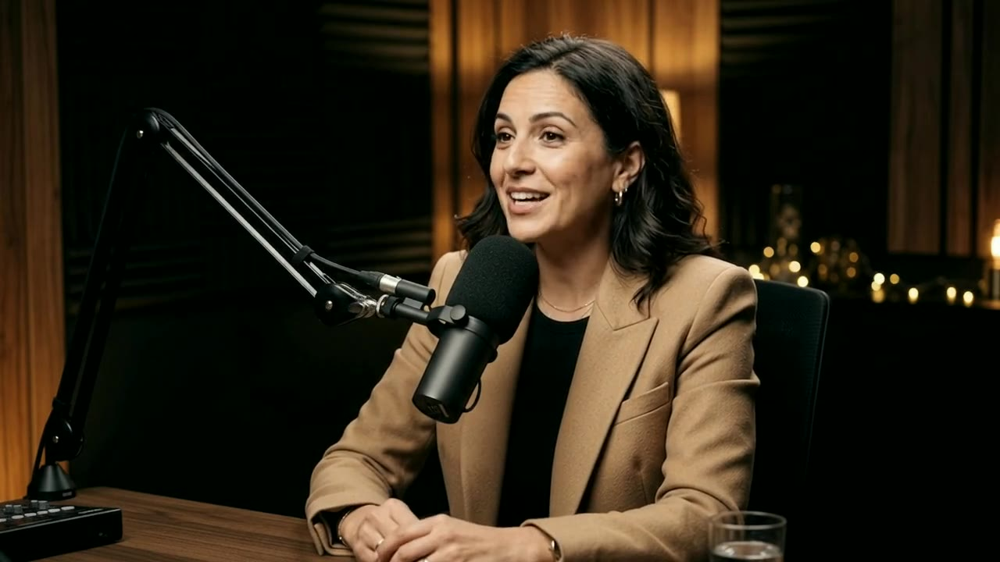
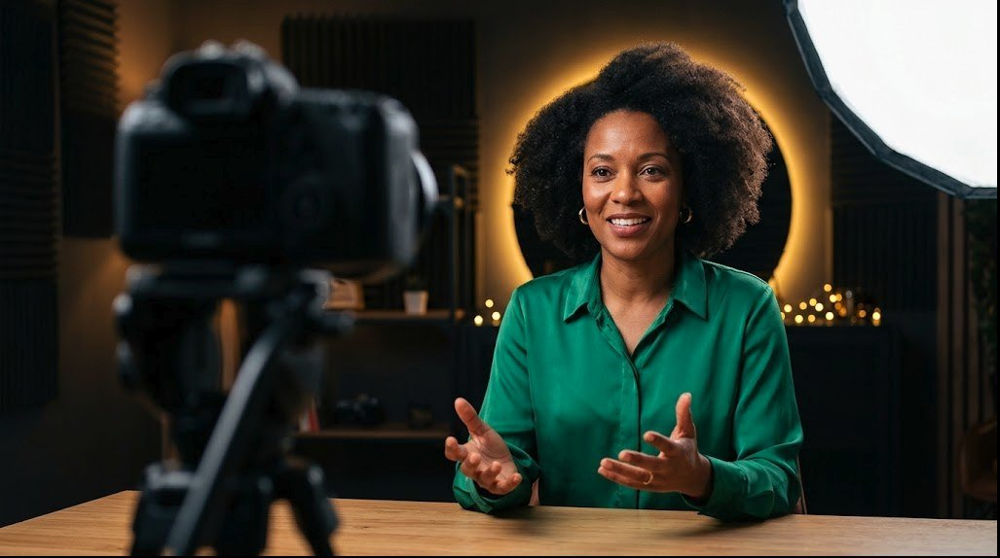

VISAGE DÉTECTÉ
Club des Inspirées × GoPod Studios
Face caméra.
Votre expertise, en pleine lumière .
Média training 60 min Puis : enregistrement en studio
Accueil. Laisser tourner la page pendant l'installation : la présentatrice parle en boucle, le viseur fait sa mise au point, le compteur REC défile (touche T pour remettre le chrono à zéro au top départ). Mot d'accueil : « Dans une heure, vous allez passer devant de vraies caméras. Mon objectif : que vous y alliez avec envie, pas avec la boule au ventre. »
La promesse
Dans 60 minutes, vous repartez avec…
PISTE 01
Votre pitch de 60 secondes Clair, chaleureux, mémorable. Testé à voix haute devant une autre entrepreneuse.
PISTE 02
Votre script, co-écrit avec l'IA La méthode de prompt pour un texte qui sonne comme vous, pas comme une brochure.
PISTE 03
Votre présence à l'écran Voix, regard, tenue, make-up : prête pour l'enregistrement qui suit.
Pourquoi Le pitch La voix Jeu de rôle Script IA Style Le studio À vous !
Poser le contrat. Trois résultats concrets, et une règle : ici on essaie, on rate, on rit. Le programme en bas : 8 étapes, dont 4 où elles pratiquent. Annoncer qu'on finit par l'enregistrement en studio, chacune son pitch. Prévenir : « Sortez vos téléphones, on va voter en direct. »
Brise-glace · 3 min · vote en direct
Le thermomètre
« À quel point êtes-vous à l'aise face à une caméra ? »
0 votes · moyenne –
1 · Je fuis les objectifs 10 · Je pourrais présenter le JT
Puis avec votre voisine · 90 secondes
Qu'est-ce qui vous freine ?
Et qu'est-ce que ça vous rapporterait d'oser ?
Faire scanner le QR code : tout le monde vote de 1 à 10, l'histogramme se remplit en direct. Variante physique si le réseau flanche : la salle devient un thermomètre (un mur = 1, l'autre = 10). Commenter avec humour (« beaucoup de 3, parfait, vous êtes au bon endroit »). Repérer les 1 à 3 pour les mettre en binôme avec des 7 à 10 tout à l'heure. Clic : la consigne d'échange en binôme, 90 secondes. Récupérer 2 ou 3 freins à voix haute (« je n'aime pas ma voix », « je ne sais pas quoi dire ») : ils servent de fil rouge.
Quiz 01 / 03 · Premières impressions
Combien de temps faut-il pour juger si un visage inspire confiance ?
0 votes · onglet « Quiz 1 » sur votre téléphone
Un dixième de seconde suffit pour juger la confiance, la compétence ou la sympathie qu'inspire un visage.
Avec plus de temps, le verdict bouge peu : on en devient surtout plus sûr. Vos premières secondes à l'écran comptent double.
Source : J. Willis et A. Todorov, « First Impressions », Psychological Science, 2006
Vote sur le téléphone (onglet Quiz 1) pendant le chrono de 10 secondes ; les pourcentages montent en direct. À main levée si le réseau flanche. Clic 1 : la bonne réponse s'allume. Clic 2 : l'explication. Transition : « Bonne nouvelle : ce qu'on dégage dans ces premières secondes, ça se travaille. C'est tout l'objet de l'heure. »
Quiz 02 / 03 · Vrai ou faux ?
« 93 % de la communication passe par le non-verbal. »
0 votes · onglet « Quiz 2 »
Faux · un mythe
Albert Mehrabian
n'a jamais dit ça.
Ses expériences de 1967 portaient uniquement sur des émotions exprimées avec des signaux contradictoires .
La vraie leçon : quand les mots disent « je suis ravie » et que le visage dit l'inverse, on croit le visage. Votre fond compte ; votre forme doit le servir.
Sources : A. Mehrabian (1967) et ses mises au point ; D. Lapakko, Augsburg University
Vote sur le téléphone (onglet Quiz 2). La majorité répond souvent « vrai » : c'est le chiffre le plus cité des formations en communication… et il est faux. Clic 1 : le tampon et la bonne réponse. Clic 2 : l'explication. Message clé : on ne leur demande pas d'être des actrices. On leur demande d'être cohérentes, et que leur corps et leur voix ne contredisent pas leur expertise.
Les enjeux
Même expertise. Deux perceptions.
● 720P · ISO 6400 SMARTPHONE Lumière insuffisante Son : écho de la pièce Cadre : contre-plongée
Le soir, dans la cuisine, au téléphone

● 4K · ISO 800 STUDIO Lumière maîtrisée Son : micro broadcast Cadre : regard caméra
En studio : lumière, son, cadre
À laquelle confiez-vous votre dossier ?
Montrer d'abord l'image de gauche, laisser un silence : le viseur affiche les alertes. Clic : l'image de droite, tout passe au bleu. Clic : la question à la salle. Insister : ce n'est pas une question d'ego ni de beauté. Le public juge la compétence à travers la qualité perçue, avant même d'écouter le fond. Le cadre, la lumière et le son sont des signaux de sérieux.
Ils l'ont fait · Le cas d'école
Avi Bitton, avocat en droit du travail
Cabinet parisien créé en 2005. Il se présente aujourd'hui comme « l'avocat le plus suivi de France ».
0
abonnés, tous réseaux confondus
×0
de chiffre d'affaires, selon une analyse de sa stratégie
0 €
pour des conseils qu'il facturerait en cabinet
La recette : répondre en vidéo, avec régularité, aux questions de ses futurs clients.
REEL · @AVOCAT.AVI.BITTON
Sources : Actu-Juridique ; Plateya · Vidéo : @avocat.avi.bitton sur Instagram
Le cas qui parle à toutes les professions réglementées. Son reel tourne en boucle dans le téléphone (sans le son) : un format court, un sujet qui inquiète ses clients (« Harcèlement au travail : quand en parler ? »), des sous-titres, des incrustations. Il ne fait pas le show : il donne gratuitement en vidéo des conseils qu'il facturerait en rendez-vous, et la notoriété fait venir les dossiers. Le × 3 vient d'une analyse publiée par Plateya : le présenter comme tel. Clic : la recette. Question à poser : « Quelles sont les 10 questions que vos clientes vous posent toutes ? Chacune est une vidéo. »
Elles l'ont fait
Trois expertes devenues des voix
Erika Kullberg Ex-avocate d'affaires, New York
9 M
abonnés TikTok
Elle décortique les petites lignes des contrats pour défendre les consommateurs. Sa vidéo sur les retours chez Nike : plus de 74 millions de vues.
Héloïse Bolle Ex-journaliste éco, fondatrice d'Oseille & Compagnie
85 %
de clientes femmes
Elle parle d'argent sans tabou, sur LinkedIn puis Instagram. D'après elle, la majorité de ses clients viennent des réseaux.
Mel Robbins Ex-avocate, autrice et animatrice
TEDx
San Francisco, 2011
Un seul talk l'a lancée : des livres best-sellers, puis un podcast primé lancé en 2022.
Sources : The Fintech Times ; Option Finance ; MySweetimmo ; Wikipédia (Mel Robbins)
Un clic par portrait, 30 secondes chacun. Erika Kullberg : une avocate qui a quitté son grand cabinet ; son format est toujours le même (une situation, puis comment son expertise vous protège). Héloïse Bolle : reconvertie à 40 ans, elle a commencé sur LinkedIn après la sortie de son livre ; aujourd'hui 85 % de ses clients sont des femmes et, selon elle, la majorité vient des réseaux. Mel Robbins : ex-avocate, un talk TEDx a tout déclenché. Point commun à souligner : aucune n'a commencé « à l'aise ». Elles ont commencé régulières.
01
TED : une idée par talk Robin Roberts, MasterClass : l'authenticité d'abord
Chapitre 1 · 12 minutes
Votre pitch de 60 secondes
Une seule idée, portée avec sincérité.
Ouverture du chapitre pitch. Les grandes masterclasses de prise de parole convergent sur deux points : TED demande à chaque orateur de porter une seule idée ; Robin Roberts (Good Morning America) bâtit sa MasterClass de communication sur l'authenticité et la connexion avec le public. En 60 secondes, on n'a la place que pour une idée : la vôtre.
La méthode
5 temps, 60 secondes
5 S 1
10 S 2 · Cible
15 S 3 · Déclic
15 S 4 · Preuve
15 S 5 · Invitation
00:00 00:15 00:30 00:45 01:00
1 · Accroche Une phrase qui arrête le pouce : une question, un constat, un chiffre.
2 · Cible Pour qui vous êtes là : « J'accompagne les… qui… »
3 · Déclic L'avant / après que vous créez pour elles. Le cœur du pitch.
4 · Preuve Un résultat, une cliente, votre parcours. Du concret, pas des adjectifs.
5 · Invitation Une seule action simple : « Écrivez-moi », « Abonnez-vous ».
150
mots à voix haute. Pas un de plus.
La tête de lecture parcourt la minute : l'accroche est minuscule (5 secondes) mais décisive, et le cœur du temps va au déclic et à la preuve. Lire les 5 cartes en racontant l'exemple de la page suivante. Clic : le repère des 150 mots (un débit posé à l'oral). Astuce : écrire des mots-clés, pas des phrases, pour ne pas réciter.
Exemple fictif · à lire à voix haute
Nadia, expert-comptable des créatrices
Environ 105 mots, soit 45 secondes avec les respirations. Personnage et chiffres fictifs.
Accroche Vous avez créé votre entreprise pour faire ce que vous aimez… pas pour passer vos dimanches sur vos factures.
Cible Je suis Nadia, expert-comptable. J'accompagne les créatrices et les indépendantes qui veulent enfin comprendre leurs chiffres.
Déclic Avec moi, la compta n'est plus une corvée : c'est un tableau de bord qui vous dit quand investir, combien vous verser, et quand dire non.
Preuve L'an dernier, une cliente fleuriste a augmenté sa rémunération de 40 % sans travailler une heure de plus.
Invitation Vous voulez savoir ce que vos chiffres essaient de vous dire ? Écrivez-moi « CHIFFRES » en message privé.
Le prompteur éclaire une ligne à la fois : lire à voix haute, un clic par ligne, en marquant les pauses. Faire remarquer : l'accroche parle d'elles, pas de Nadia ; la preuve est un chiffre et une personne ; l'invitation est un seul geste, simple. Personnage et chiffres sont fictifs, c'est un modèle. Puis : « À vous. »
Atelier · en binômes · 8 min
Pitch express
3:00
01 · 3 min
Écrivez vos 5 temps Des mots-clés, pas des phrases.
02 · 45 s chacune
Pitchez sans lire Debout, les yeux dans les yeux de votre binôme.
03 · 1 min
Le retour en 3 phrases Bienveillant, précis, sans « mais ».
Les 3 phrases du retour J'ai compris que tu… J'ai retenu cette phrase : … Je t'appellerais si…
Former les binômes en mélangeant les « 1 à 3 » et les « 7 à 10 » du thermomètre. Le chrono de 3 minutes démarre à l'affichage (cliquer dessus pour le mettre en pause ou le relancer ; touche 0 pour le remettre à zéro). Mots-clés seulement, en suivant les 5 temps. Puis 45 secondes de pitch chacune, debout, sans papier si possible, et 1 minute de retour avec les 3 phrases (clic). Passer dans les binômes : aider à trouver l'accroche. Garder ce pitch : c'est celui qu'elles enregistreront en studio.
02
Julian Treasure, TED : la boîte à outils de la voix Chris Voss, MasterClass : la voix qui rassure
Chapitre 2 · 8 minutes
Voix, regard, présence
La caméra n'est pas une foule : c'est une seule personne, à un mètre de vous.
Ouverture du chapitre voix et présence. Deux références : le talk TED de Julian Treasure sur la manière de parler pour être écouté (sa « boîte à outils » de la voix), et la MasterClass de négociation de Chris Voss, ancien négociateur du FBI, pour la voix calme qui installe la confiance.
Le regard et le corps
La caméra est une personne
Regardez l'objectif, pas l'écran C'est là que se trouvent les yeux de votre cliente.
Parlez à une seule personne Pensez à une cliente précise. Dites « vous », jamais « vous tous ».
Les mains dans le cadre Gestes ouverts, à hauteur de poitrine : ils rythment la parole.
Souriez avant de parler Un sourire dans les yeux, une seconde avant le « top ». Il s'entend dans la voix.
L'astuce studio : une gommette
Faire le geste : tendre le bras, pointer l'objectif imaginaire. Erreur n°1 des débutantes : regarder son propre visage sur l'écran de contrôle, ce qui donne un regard fuyant. Demander à chacune de choisir maintenant la cliente précise à qui elle parlera pendant l'enregistrement, avec un prénom. Clic : l'astuce de la gommette, qu'on appliquera au studio.
La voix · inspiré de Julian Treasure (TED)
Votre voix, votre meilleur outil
Débit Ralentissez : ce qui vous paraît lent sonne posé à l'écran.
Pauses Un silence avant l'idée clé : il dit « écoutez bien ».
Mélodie Variez les hauteurs, et descendez en fin de phrase pour affirmer.
Volume Parlez comme à quelqu'un assis en face de vous. Le micro fait le reste.
Timbre Respirez par le ventre : la voix descend et se pose.
L'astuce de Chris Voss : la voix de l'animateur de radio de nuit. Plus grave, plus lente, qui descend en fin de phrase. Elle rassure.
Les 5 réglages arrivent comme sur une table de mixage. Faire tester chaque réglage en une phrase, toutes ensemble (« Bonjour, je m'appelle… » lentement, puis avec une pause, puis en descendant en fin de phrase). Inspiré du talk TED de Julian Treasure, « How to speak so that people want to listen ». Clic : l'astuce de Chris Voss (MasterClass de négociation) : la voix grave et lente de l'animateur de radio de nuit, qui installe le calme et l'autorité.
La voix · cas d'école · Theranos
La voix d'emprunt s'entend
● Archive · ABC News · 2019 Extrait 5:50 → 7:00 · VO
Elizabeth Holmes
Fondatrice de Theranos, start-up de tests sanguins valorisée jusqu'à 9 milliards de dollars. Condamnée en 2022 pour fraude envers ses investisseurs.
Sa marque de fabrique : col roulé noir… et une voix de baryton.
« Ce n'était pas sa vraie voix. Un soir, à une fête de l'entreprise, elle est sortie du personnage. »Ana Arriola, ancienne cadre de Theranos
Pourquoi ça dessert
01 Le faux s'entend Une voix forcée crée un décalage entre ce qu'on voit et ce qu'on entend. L'oreille le repère, et le doute s'installe.
02 Le vocal fry coûte cher Voix qui grésille en fin de phrase quand on force le grave. Face à la même phrase dite normalement, plus de 80 % des auditeurs jugent le fry moins compétent, moins fiable, moins embauchable. Les femmes sont plus pénalisées.
03 La gravité vient du souffle Respirez par le ventre et descendez en fin de phrase. Votre voix, posée : pas celle d'une autre.
Sources : ABC News, « The Dropout », 2019 ; R. C. Anderson, C. A. Klofstad et al., PLOS ONE, 2014 (800 auditeurs)
Clic 1 : l'extrait d'ABC News se lance (70 s, en anglais, sous-titres activés si disponibles ; il faut Internet). On y entend sa voix de baryton sur scène, puis le témoignage d'Ana Arriola (elle « sortait du personnage » en soirée), un extrait d'une interview NPR de 2005 avec une voix nettement plus haute, et Phyllis Gardner, professeure à Stanford : « Quand elle est venue me voir, elle n'avait pas une voix grave. » Par honnêteté : sa famille affirme que c'est sa voix naturelle. Nuance à dire : ce n'est pas du vocal fry au sens strict, c'est une voix abaissée et tenue en permanence ; le vocal fry est sa version quotidienne, le grésillement en fin de phrase quand on force le grave ou qu'on manque de souffle. Clic 2 : les 3 leçons. L'étude de 2014 (PLOS ONE) : 7 femmes et 7 hommes disent la même phrase avec et sans fry ; 800 auditeurs choisissent la voix normale dans plus de 80 % des cas, sur la compétence, l'éducation, la confiance, l'attrait et l'embauche, et les femmes sont plus pénalisées. Lien avec la page précédente : la voix de radio de nuit de Chris Voss vient du souffle et du rythme, pas d'une gorge écrasée.
Jeu · tout le monde debout · 3 min
Échauffement express
01
Respirez 4 – 4 – 6 Inspirez 4 s, bloquez 4 s, soufflez 6 s. Trois fois, avec le cercle. Le souffle se pose, la voix aussi.
02
Une phrase, trois intentions « Je vais vous montrer comment ça marche. » Enthousiaste, puis confidentielle, puis experte.
03
Le stylo entre les dents Dites votre accroche un stylo entre les dents, puis sans : l'articulation se réveille.
Debout. 1) Suivre le cercle qui respire : 4 s inspirez, 4 s bloquez, 6 s soufflez, trois cycles (environ 40 secondes). C'est l'exercice à refaire juste avant de passer en studio. 2) Clic : toutes ensemble, la même phrase avec trois intentions ; on entend la différence, et ça fait rire. 3) Clic : le stylo entre les dents (exercice classique de diction), sur leur propre accroche. Puis on la redit sans stylo : la différence de netteté est immédiate.
03
Jeu de rôle en trios 3 tours de 2 minutes
Chapitre 3 · 8 minutes
L'interview surprise
Dans la vraie vie, personne ne vous envoie les questions à l'avance.
Le pitch, on le prépare. Mais en interview, en podcast ou en live, les questions arrivent sans prévenir. Ce jeu entraîne à rester claire et souriante quand on improvise. Former les trios pendant que la page s'affiche.
Jeu de rôle · trios · 3 tours de 2 min
Trois rôles, on tourne
2:00
Rôle 1
La journaliste Tire une carte, pose la question, relance une seule fois : « C'est-à-dire ? »
Rôle 2
L'invitée Répond en 45 secondes maximum, en regardant le téléphone qui filme.
Rôle 3
L'observatrice Filme au téléphone, puis note la grille de la page suivante.
À chaque « Top » : on tourne d'un cran. La journaliste devient l'invitée, l'invitée devient l'observatrice.Trios. Chaque invitée répond à UNE question tirée au hasard (page suivante, bouton « Tirer une carte »). Le chrono de 2 minutes démarre à l'affichage : 45 s de réponse, 1 min de retour de l'observatrice avec la vidéo du téléphone. Touche 0 : relancer le chrono pour le tour suivant. Clic : la règle de rotation. Les vidéos du téléphone sont pour elles seules : se voir une fois, c'est le meilleur des déclics.
Les cartes questions
Tirez une carte
Tirer une carte ⟳
Q1
« Qu'est-ce que vous faites, en une phrase ? »
Q2
« Pourquoi vous, et pas une autre ? »
Q3
« Racontez la cliente dont vous êtes la plus fière. »
Q4
« Quelle idée reçue sur votre métier vous agace ? »
Q5
« Qu'auriez-vous aimé savoir en démarrant ? »
Q6
« Si on ne devait retenir qu'une chose de vous ? »
La grille, de 1 à 3 : Regard caméra Débit Énergie La phrase qu'on retient
Laisser cette page affichée pendant les tours. Bouton « Tirer une carte » (ou touche D) : une question est tirée au sort à l'écran ; cliquer sur une carte la sélectionne directement. Les questions 3 et 4 sont les plus riches : elles font naître des histoires et des prises de position. Clic : la grille de l'observatrice. Débrief collectif en 1 minute : « Qui a entendu une phrase qu'elle n'oubliera pas ? »
04
La méthode CADRE ChatGPT, Claude ou Gemini : même méthode
Chapitre 4 · 10 minutes
Votre script avec l'IA
L'IA écrit vite. Vous seule savez ce qui est vrai.
Ouverture du chapitre IA. Message clé : l'IA ne remplace pas votre expertise, elle la met en forme. Un prompt vague donne un texte vague ; un prompt cadré donne un texte qui vous ressemble. Demander qui utilise déjà une IA pour écrire, et qui est déçue du résultat.
La méthode
Un bon prompt a un CADRE
Le prompt qui déçoit
« Écris-moi une présentation pour une vidéo. » Résultat : un texte générique, qui pourrait être celui de n'importe qui. Lisse, long, impossible à dire à voix haute.
C Contexte Qui vous êtes, votre métier, ce qui vous rend unique.
A Audience À qui vous parlez, et ce qui l'empêche de dormir.
D Diffusion Où et combien de temps : Reels, LinkedIn, 60 s, environ 150 mots.
R Rôle et registre « Tu es scénariste vidéo. » Ton chaleureux, vouvoiement, zéro jargon.
E Exigences Phrases courtes, écrites pour l'oral. Une idée, une invitation.
À gauche, le prompt que tout le monde tape : il se fait barrer. À droite, les 5 lettres du CADRE arrivent une à une (un clic par lettre). Insister sur le A : décrire la douleur de la cliente change tout le texte. Et sur le E : demander explicitement un texte écrit pour être dit, avec des phrases courtes, sinon l'IA écrit pour être lue.
Le modèle à copier
Votre prompt, prêt à l'emploi
Tu es scénariste spécialisée en vidéos courtes pour des expertes.
C Je suis [métier] . J'aide [qui] à [résultat] . Ce qui me distingue : [singularité] .
A Mon audience : [qui] , qui souffre de [problème] et rêve de [désir] .
D Format : vidéo face caméra de 60 secondes (environ 150 mots) pour [Instagram / LinkedIn] .
R Ton : chaleureux, direct, enthousiaste. Vouvoiement. Zéro jargon.
E Structure : accroche, cible, déclic, preuve, invitation. Phrases de 12 mots maximum, écrites pour être dites à voix haute.
Avant d'écrire, pose-moi 5 questions pour bien me connaître.
Remplacez chaque [crochet] par du concret : un vrai métier, une vraie cliente.
La dernière ligne est la plus puissante : l'IA vous interviewe avant d'écrire.
Le QR code ouvre le prompt sur leur téléphone, avec un bouton « Copier » (onglet « Prompt CADRE », les 5 relances y sont aussi) : plus besoin de photographier l'écran. Les lettres bleues rappellent le CADRE, les crochets surlignés sont à remplacer. Le secret, c'est la dernière ligne : en demandant 5 questions d'abord, l'IA va chercher leurs histoires, leurs chiffres et leurs mots, et le texte cesse d'être générique.
Le premier jet n'est jamais le bon
Itérer comme une pro : 5 relances
Relance 1 « Propose 3 accroches : une question, un chiffre, une histoire. »
Relance 2 « Réécris pour l'oral : phrases courtes, une respiration par ligne. »
Relance 3 · la plus importante « Ajoute cet exemple vrai, tiré de mon expérience : [anecdote]. »
Relance 4 « Coupe à 150 mots. Garde ce qui me ressemble, enlève la brochure. »
Relance 5 « Joue ma cliente idéale : qu'est-ce qui te ferait arrêter de scroller ? »
La règle d'or : lisez à voix haute, chrono en main. Si vous butez sur un mot, changez-le.
Une relance par clic, comme une conversation. La 3 est la plus importante : l'IA ne connaît pas vos histoires, vous si ; c'est ce qui rend le texte crédible. La 5 retourne l'IA en cliente test. Clic final : la règle d'or. Un texte écrit n'est pas un texte dit ; c'est la bouche qui valide, pas l'écran.
Jeu · démo en direct · 4 min · vote
Battle de prompts
Prompt A · le réflexe
« Écris ma présentation vidéo. » Une ligne, zéro contexte.
VS
Prompt B · le CADRE
Le modèle complet, rempli en direct Avec la volontaire : son métier, sa cliente idéale, puis les 5 questions de l'IA.
1 Une volontaire donne son métier et sa cliente idéale.
2 On lance les deux prompts en direct, à l'écran.
3 La salle vote : lequel donne envie de l'appeler ?
Démo en direct sur l'IA de votre choix (ChatGPT, Claude ou Gemini), écran partagé (touche B pour masquer la présentation si besoin). Prendre une volontaire, de préférence une « 1 à 3 » du thermomètre qui a pris confiance. Lancer d'abord le prompt A, lire le résultat à voix haute (effet comique garanti). Puis remplir le modèle CADRE avec elle, laisser l'IA poser ses 5 questions, et lire la nouvelle version. Vote sur le téléphone (onglet Battle) : les jauges montent en direct. Elle repart avec son script pour l'enregistrement.
05 · Stylisme · 4 min
Ce que la caméra aime
Oui Couleurs unies et franches : bleu, émeraude, terracotta, bordeaux Coupes structurées, épaules nettes Matières mates, qui ne brillent pas sous les projecteurs Plutôt non Fines rayures, petits carreaux : ils « vibrent » à l'image (moiré) Blanc éclatant ou noir total : ils écrasent les détails Logos et messages imprimés Bijoux qui tintent : le micro les entend
Stylisme. Règle simple : la caméra aime les aplats de couleur et déteste les motifs serrés, qui créent un effet de moiré. Le blanc pur « brûle » et le noir total « bouche » l'image. Avec un micro de studio, bracelets et grandes boucles qui s'entrechoquent s'entendent : on les garde discrets. Conseil : choisir une couleur signature, la porter à chaque vidéo, elle devient une marque.
05 · Make-up pour la caméra
La HD ne pardonne pas la brillance
Teint mat La poudre sur le front, le nez et le menton, avant chaque prise.
Un ton au-dessus Les projecteurs « mangent » les couleurs.
Sourcils et cils définis Ce sont eux qui portent l'expression.
Lèvres Nude rosé ou couleur douce, sans excès de brillant.
Cheveux dégagés On doit voir vos yeux, toujours.
Le but : être vous, sans les reflets.
Make-up. Sous les projecteurs, la peau brille et les couleurs s'atténuent : on matifie et on intensifie légèrement. La poudre est l'accessoire n°1, à repasser entre deux prises. Pour celles qui ne se maquillent pas : une poudre transparente suffit. Rappeler qu'au studio on a un miroir et du temps pour se préparer avant la prise.
Quiz 03 / 03 · Le look caméra
Valide ou à éviter ?
PRISE 1
Une chemise à fines rayures À éviter : effet de moiré
PRISE 2
Un blazer émeraude uni Valide
PRISE 3
De grandes créoles qui s'entrechoquent À éviter : le micro entend tout
PRISE 4
Un voile de poudre avant chaque prise Valide
Et vous, qu'avez-vous prévu de porter tout à l'heure ?
Quiz express (1 minute), à main levée : pour chaque carte, « valide » ou « à éviter » ? Un clic révèle chaque verdict. Les créoles sont le piège : on n'y pense jamais, mais un micro de studio capte le moindre cliquetis. Clic final : faire regarder sa tenue du jour et décider maintenant de l'ajuster si besoin (veste retirée, bijoux enlevés).
06
Le son La lumière Le cadre Le temps que vous ne passez pas à monter
Chapitre 6 · 4 minutes
Le bon support
Votre expertise mérite un écrin à sa hauteur.
Retour au quiz n°1 : on juge en un dixième de seconde. Un son qui résonne, une image sombre ou un cadre bancal envoient un signal d'amateurisme, même quand l'expertise est solide. Le matériel ne remplace pas le message, il lui permet d'être écouté.
Les vrais coûts · par mois
Ce que coûte vraiment une vidéo « maison »
Pour 1 vidéo longue + 6 clips par mois. Votre heure comptée à 80 € : remplacez par votre propre taux.
Tout faire soi-même Smartphone et appli gratuite
0 € d'achat
10 h de tournage, montage, sous-titres : le coût caché
≈ 800 € / mois + 20 h pour apprendre le montage. Et un rendu amateur.
Soi-même, en matériel pro Caméra, micro, lumières, logiciel
≈ 110 € matériel amorti et logiciel
12 h avec réglages et montage : le coût caché
≈ 1 070 € / mois + 2 100 € d'achat, 40 h à apprendre
Vidéaste + monteur Tournage et montage sous-traités
980 à 2 050 € de prestations
4 h de briefs, tournage, retours
≈ 1 300 à 2 370 € par mois, + coordination et délais
Tarifs : SuperIndep, LeFreelance.fr, Studio Sport, Materiel.net, LePtidigital · Temps estimés
Les colonnes montent, puis un clic par total. Faire calculer chacune avec SON taux horaire. 1) Tout soi-même : 0 € dépensé, mais environ 10 h par mois (installer, refaire les prises, monter 7 vidéos, sous-titrer, exporter), soit environ 800 € de temps facturable perdu, plus une vingtaine d'heures pour apprendre à monter. Et le rendu reste amateur. 2) Soi-même avec du matériel pro : caméra hybride avec objectif environ 1 200 €, micro broadcast environ 400 €, interface audio et lumières (estimation : 500 €), soit environ 2 100 € d'achat ; amorti sur 2 ans plus un logiciel de montage à environ 24 € par mois, cela fait environ 110 € par mois. Mais le temps augmente : environ 12 h, soit 960 €. 3) Vidéaste + monteur : cadreur-monteur confirmé de 350 à 550 € la journée, montage d'une vidéo longue de 150 à 300 € et de 80 à 200 € par clip court avec sous-titres animés : de 980 à 2 050 € par mois, plus environ 4 h de coordination. Chute : le coût le plus cher n'est pas toujours celui qu'on paie. Transition : « Et s'il existait un quatrième scénario ? »
GoPod Studios · Saint-Herblain
Vous parlez. On prépare tout le reste.
Votre expertise travaille pour vous.
Zéro prise de tête technique Lumière, caméras et micros déjà réglés. Vous arrivez, vous parlez.
Livré en moins de 48 h Vidéo pré-montée et clips pour les réseaux, grâce à une post-production assistée.
Un rendu professionnel Son, lumière et cadre qui inspirent confiance dès la première seconde.
Une séance, du contenu pour longtemps Une vidéo longue et des clips prêts à publier, montés en motion design.
Offre Club des Inspirées : [à préciser] gopod.fr Le quatrième scénario. GoPod, c'est un studio automatisé à Saint-Herblain : tout est réglé avant votre arrivée, une seule personne fait tourner le studio, et la post-production assistée par IA livre la vidéo pré-montée et les clips en moins de 48 h. Pour des pros qui manquent de temps : zéro technique, zéro montage, un rendu qui renforce leur crédibilité. Clic : l'offre réservée au Club (à compléter avant la séance).
Résultats de clients GoPod
Ce que ça change, concrètement
Mélissa Créatrice de contenu
Avant : ≈ 3 000 vues en moyenne
3 000
vues sur plusieurs reels tournés chez GoPod.
Patrick Lesage Expert du sommeil
Avant : 10 000+ abonnés
10 000
abonnés LinkedIn : il a franchi la barre des 15 000.
La régularité fait le reste. Le studio la rend facile.
Les compteurs défilent à l'affichage. Mélissa, créatrice de contenu, faisait environ 3 000 vues en moyenne par reel ; avec des vidéos tournées chez GoPod, plusieurs reels ont atteint 200 000 vues. Patrick Lesage, expert du sommeil, a franchi les 15 000 abonnés sur LinkedIn (il en avait déjà plus de 10 000). Message : la qualité ne fait pas tout, mais elle rend la régularité tenable, et c'est la régularité qui paie.
Votre checklist
Avant d'entrer en studio
Mon pitch chronométré : 60 s, pas plus
Ma tenue validée, et une de rechange
Mes mots-clés notés, pas tout le texte
Poudre, baume à lèvres, brosse
Ma première phrase connue par cœur
De l'eau, et le téléphone en mode avion
Ma cliente idéale en tête, avec un prénom
Trois respirations 4-4-6, un sourire, top !
Prochaine étape : le studio. Chacune enregistre son pitch de 60 secondes.
La checklist est aussi sur leur téléphone (QR, onglet « Checklist studio »), à cocher. À l'écran, cliquer sur une ligne la coche. Clic : la transition vers l'enregistrement. Annoncer l'ordre de passage et rappeler l'exercice de respiration à faire juste avant de s'asseoir.
3
À vous la caméra.
On passe en studio : chacune enregistre son pitch de 60 secondes.
GoPod Studios · Euptouyou, bâtiment Asturia, 4 rue Édith Piaf, Saint-Herblain · gopod.fr
Fin de la formation. Le compte à rebours 3, 2, 1, Action se lance à l'affichage. Remercier le Club des Inspirées, puis direction le plateau. Garder cette page affichée pendant le changement de salle.
00:00:00:00
4K · 24P · ISO 800
→ / Espace / clic : suivant · ← : précédent · F : plein écran · P : vue présentatrice · G : plan général